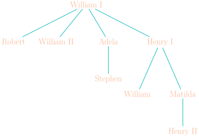
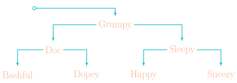
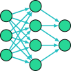
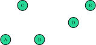
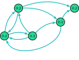
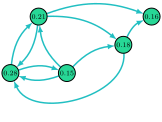

Jed Rembold
November 20, 2020



You start with a set of pages

Crawl the web to determine the link structure
Assign each page an initial rank of \(1/N\)

Update the rank of each page by adding up the rank of every page that links to it divided by the number of links emanating from the referring page.
If a page (like Node E) has no outward links, redistribute its rank equally among the other pages in the graph
Apply this redistribution to every page in the graph

Repeat process until ranks stabilize